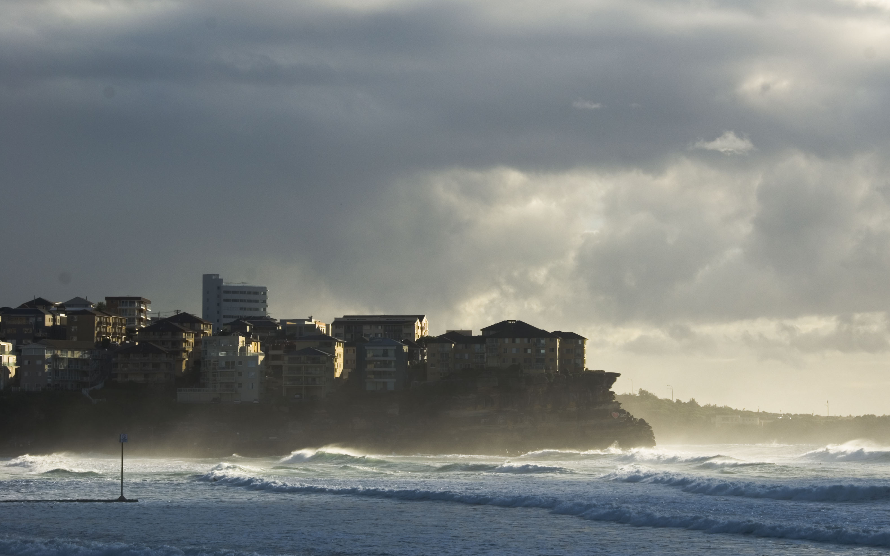
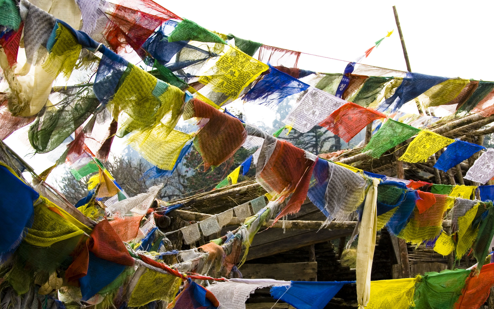
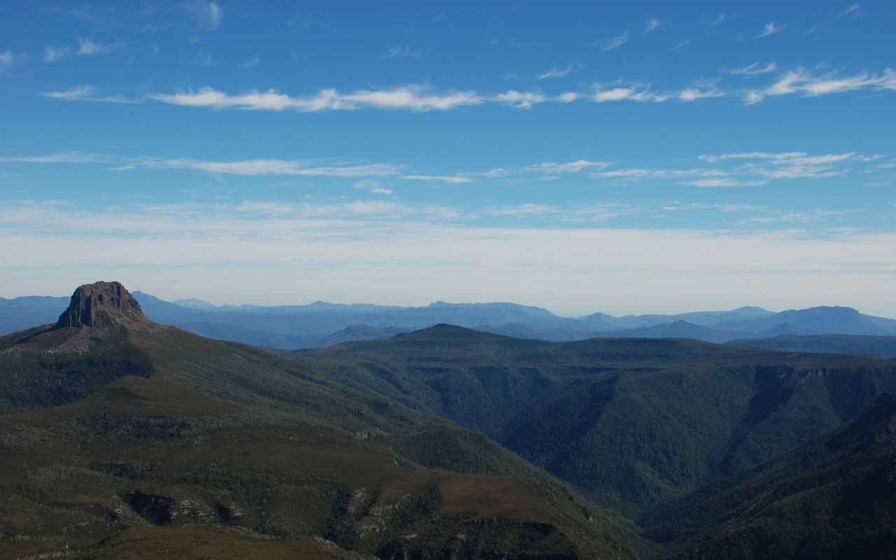

<div id="wrapper">
	<div id="content">
		<div id="navigation">
			<ul>
				<li><a href="#take">Take</a></li>
				<!--<li><a href="#do">Do</a></li>-->
				<li><a href="#read">Read</a></li>
				<li><a href="#read">Contact</a></li>
			</ul>
		</div>
		<div id="header-WIP"></div>
		<div id="header">
			
			<div id="logo"></div>
			<div id="header-title"><h1>Nick Cordrey</h1>
				
			</div>
		<h2>Product guy. Technologist. Photography enthusiast. Sometime surfer and cyclist.</h1>
		</div>

		<div id="take" class="section">
			<div id="take-icon">
			<h2><a name="take">Take</a></h2></div>
			<div id="gallery">
				
				
				
				
				
				
				
				
				
				
				
			</div>
			    <script>
		            Galleria.loadTheme('galleria/themes/classic/galleria.classic.min.js');
		            $("#gallery").galleria({
		                width: 525,
		                height: 400,
						autoplay: 7000
		            });
		        </script>
		</div>
		<div id="read" class="section">
			<h2><a name="read">Read</a></h2>
			
			
			
			
			
			
		</div>
		<div id="contact" class="section">
			<h2><a name="contact">Contact</a></h2>
			<a href="http://uk.linkedin.com/in/nickcordrey" target="_blank"></a>
			<a href="http://www.facebook.com/nickcordrey" target="_blank"></a>
			<a href="http://www.twitter.com/nickcordrey" target="_blank"></a>
			<a href="http://www.flickr.com/photos/nickcordrey" target="_blank"></a>
			<a href="http://www.delicious.com/nickcordrey" target="_blank"></a>
		</div>
	</div>
</div>